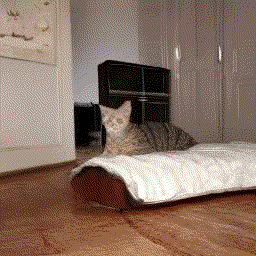

Generated Examples
We conduct experiments on both single-scene and multi-scene video generation. For single-scene video generation, we evaluate layout control via VPEval Skill-based prompts, assess object dynamics through ActionBench-Direction prompts adapted from ActionBench-SSV2, and examine open-domain video generation using the MSR-VTT dataset. For multi-scene video generation, we experiment with two types of input prompts: (1) a list of sentences describing events — ActivityNet Captions and Coref-SV prompts based on Pororo-SV, and (2) a single sentence from which models generate multi-scene videos — HiREST.
In addition, we show generated videos from text-only using Karlo and image+text with user-provided images.
Coref-SV
Scene 2: he looks happy and talks.
Scene 3: he is pulling petals off the flower.
Scene 4: he is ripping a petal from the flower.
Scene 5: he is holding a flower by his right paw.
Scene 6: one paw pulls the last petal off the flower.
Scene 7: he is smiling and talking while holding a flower on his right paw.
ModelScopeT2V

VideoDirectorGPT (Ours)

Video generation examples on a Coref-SV prompt. Our video plan's object layouts (overlayed) can guide the Layout2Vid module to generate the same mouse and flower across scenes consistently, whereas ModelScopeT2V loses track of the mouse right after the first scene, generating a human hand and a dog instead of a mouse, and the flower changes color.
Scene 2: dog is singing and dancing.
Scene 3: its friends are encouraging it to do something.
Scene 4: its friends are applauding at it.
Scene 5: it is bowing to the audience after the performance.
ModelScopeT2V

VideoDirectorGPT (Ours)

Video generation examples on a Coref-SV prompt. Our video plan's object layouts (overlayed) can guide the Layout2Vid module to generate the same brown dog and maintain snow across scenes consistently, whereas ModelScopeT2V generates different dogs in different scenes and loses the snow after the first scene.
HiREST
make caraway cakes
ModelScopeT2V

VideoDirectorGPT (Ours)

Comparison of generated videos on a HiREST prompt. Our model is able to generate a detailed video plan that properly expands the original text prompt to show the process, has accurate object bounding box locations (overlayed), and maintains the consistency of the person across the scenes. ModelScopeT2V only generates the final caraway cake and that cake is not consistent between scenes.
make strawberry surprise
ModelScopeT2V

VideoDirectorGPT (Ours)

Comparison of generated videos on a HiREST prompt. Our VideoDirectorGPT generates a detailed video plan that properly expands the original text prompt, ensures accurate object bounding box locations (overlayed), and maintains the consistency of the person across the scenes. ModelScopeT2V only generates the final dessert and it is not consistent between scenes.
ActionBench-Direction prompts
pushing stuffed animal from left to right
ModelScopeT2V

VideoDirectorGPT (Ours)

pushing pear from right to left
ModelScopeT2V

VideoDirectorGPT (Ours)

Video generation examples on ActionBench-Direction prompts. Our video plan's object layouts (overlayed) can guide the Layout2Vid module to place and move the 'stuffed animal' and 'pear' in their correct respective directions, whereas the objects in the ModelScopeT2V videos stay in the same location or move in random directions.
VPEval Skill-based prompts
a pizza is to the left of an elephant
ModelScopeT2V

VideoDirectorGPT (Ours)

four frisbees
ModelScopeT2V

VideoDirectorGPT (Ours)

Video generation examples on VPEval Skill-based prompts for spatial and count skills. Our video plan, with object layouts overlaid, successfully guides the Layout2Vid module to place objects in the correct spatial relations and to depict the correct number of objects, whereas ModelScopeT2V fails to generate 'pizza' in the first example and overproduces the number of frisbees in the second example.
User-Provided Input Image → Video
Scene 2: a <S> goes to the cream-colored kitchen and eats a can of gourmet cat snack.
Scene 3: a <S> sits next to a large floor-to-ceiling window.
Input
Generated Gif
Input
Generated Gif
Input


Generated Gif
Input


Generated Gif
Video generation examples with custom entities. Users can flexibly provide either text-only (1st row) or image+text (2nd to 4th rows) descriptions to place custom entities when generating videos with VideoDirectorGPT. For both text and image+text based entity grounding examples, the identities of the provided entities are well preserved across multiple scenes